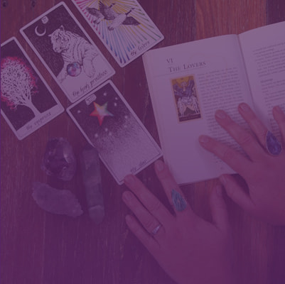

Consulta Individual
Uma leitura acolhedora para questões de amor, relacionamentos, trabalho, escolhas, ciclos e caminhos pessoais.
Consultas de tarot online e presenciais para quem busca autoconhecimento, orientação e um novo olhar sobre suas questões — e por que agora pode ser o momento certo para se escutar.
Comece sua jornadaUma leitura acolhedora para questões de amor, relacionamentos, trabalho, escolhas, ciclos e caminhos pessoais.

Desenvolva sua conexão com o tarot, fortaleça sua intuição e aprenda a interpretar as cartas com mais confiança.
Conversas sobre consciência, comportamento, espiritualidade e desenvolvimento para pessoas e grupos.
Sou Katlen Ariane, cartomante, e acredito que cada pessoa possui uma história única. Meu trabalho une a leitura das cartas, escuta e espiritualidade para ajudar você a observar situações por novos ângulos.
Mais do que respostas prontas, cada atendimento é um convite à reflexão, à conexão com a própria intuição e à construção de novos caminhos.
Conheça meu trabalho
Onde você pode me encontrar
As cartas podem revelar possibilidades, padrões e novas perspectivas para aquilo que você está vivendo.
Quero conversarO tarot é uma linguagem simbólica que pode ajudar a organizar pensamentos, reconhecer padrões e enxergar uma situação por diferentes perspectivas.
Cada carta abre espaço para perguntas, reflexões e possibilidades. O objetivo é que você saia do atendimento com mais clareza sobre aquilo que deseja compreender.

Como usar os símbolos das cartas para olhar para dentro, reconhecer padrões e compreender melhor os seus ciclos de vida.
Ler mais →Os arquétipos e significados que tornam cada leitura única.
Reflexões para fortalecer sua percepção e suas escolhas.
“Um atendimento acolhedor, leve e profundo. Saí com novas perguntas e uma visão diferente sobre o que estava vivendo.”
“A leitura me ajudou a organizar meus pensamentos e enxergar possibilidades que eu não estava percebendo.”
“Uma experiência de escuta e reflexão que me fez olhar para minhas escolhas com muito mais clareza.”
Conversamos sobre o que você quer entender melhor e eu faço a leitura das cartas a partir dessa questão, trazendo reflexões e possibilidades — sempre com respeito ao seu momento.
Em geral, entre 40 e 60 minutos, dependendo da profundidade das questões trazidas.
As duas opções estão disponíveis. Você escolhe o formato que for mais confortável para você.
Não. O tarot é uma ferramenta de reflexão e autoconhecimento — vir com a mente aberta já é suficiente.
É só chamar no WhatsApp ou preencher o formulário de contato abaixo que combinamos o melhor horário.
Entre em contato para tirar suas dúvidas, conhecer os atendimentos e encontrar a melhor forma de começar.
Falar pelo WhatsApp